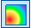
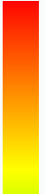
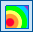
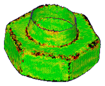
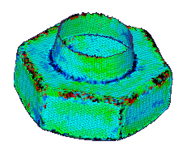

Deviation Analysis Settings dialog box
- Maximum Deviation Checking
-
- Distance
-
Specifies the maximum distance the analysis will compute. Objects or parts of objects farther from the target objects than this value are not included in the analysis. Any areas outside the maximum distance display in black.
- Color Bar Settings
-
- Style
-
Specifies the style for the color bar.
-
Smooth Contour

— Displays a smooth blend of colored contour results.
-
Banded Contour

— Displays distinct bands of colored contour results.
-
- Location
-
Specifies the location of the color bar.
-
— Positions the color bar to the left of the view.
-
— Positions the color bar to the right of the view.
-
- Decimal places
-
Controls the number of decimal places displayed for the color bar, minimum deviation value, and maximum deviation value.
- Absolute value
-
Specifies the results of the deviation, in absolute values, whether inside or outside.
- Deviation in absolute values
-

- Deviation in positive and negative values
-

- Tolerance
-
Specifies the user defined deviation tolerance. The tolerance values are useful to see areas of the model that are inside and outside the specified tolerance.
- Positive outer:
-
Specifies the positive outer deviation tolerance. By default, the value is the middle of the maximum positive deviation and the positive inner value. If you enter a value outside of this range, a warning message is displayed.
- Positive inner:
-
Specifies the positive inner deviation tolerance. By default, the value is the middle of the positive outer value and zero. If you enter a value outside of this range, a warning message displays.
- Negative inner:
-
Specifies the negative inner deviation tolerance By default, the value is the middle of the negative outer value and the zero. If you enter a value outside of this range, a warning message displays.
- Negative outer:
-
Specifies the negative outer deviation tolerance. By default, the value is the middle of the maximum negative value and the negative inner value. If you enter a value outside of this range, a warning message displays.
- Result Information
-
- Show information on screen
-
When checked, displays the deviation analysis information on the screen.
- Location
-
Specifies the postion on the screen where the information is displayed
- Top
-
Displays the information at the top of the view.
- Bottom
-
Displays the information at the bottom of the view.
- Show this dialog when the command begins
-
When set, displays the Deviation Analysis Settings dialog box automatically when you select the Deviation Analysis command. When cleared, you must use the Settings button on the Deviation Analysis command bar to open this dialog box. The default is to show the dialog box.
How do I
Create a sketch from a section curveLearn more
Reverse Engineering workflowReverse engineering example
Look up more details
Delete Mesh commandFill Holes command
Smooth Mesh command
Align command
Align command bar
Remesh command
Remesh Options dialog box
Automatic regions command
Manual regions command
Extract surfaces command
Fit surfaces command
Deviation Analysis command
Deviation Analysis command bar
Section Sketches command
Section Sketches command bar
Section Sketches Options dialog box
Related Topics
Align a mesh body to a coordinate systemAnalyze the deviation between two objects